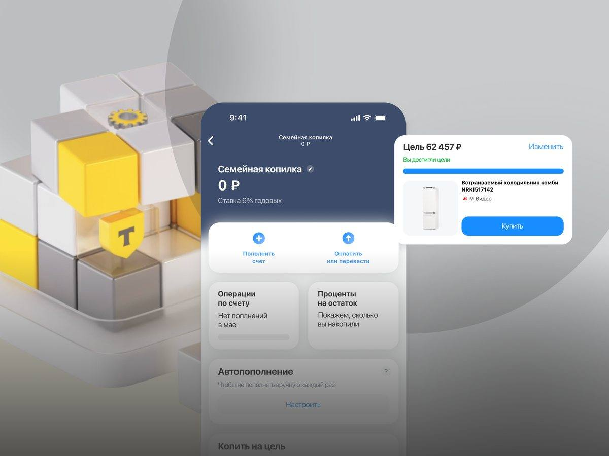
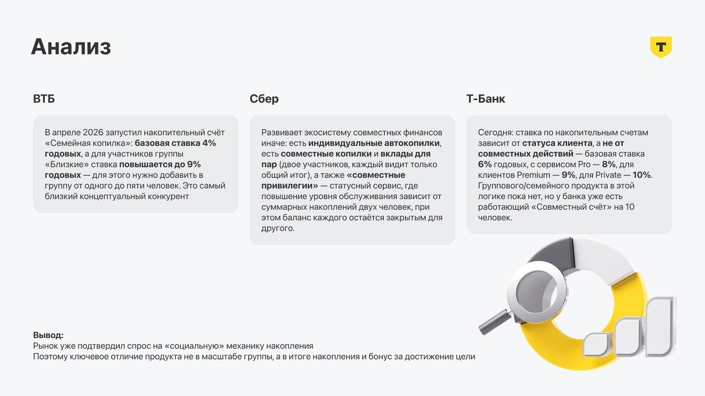
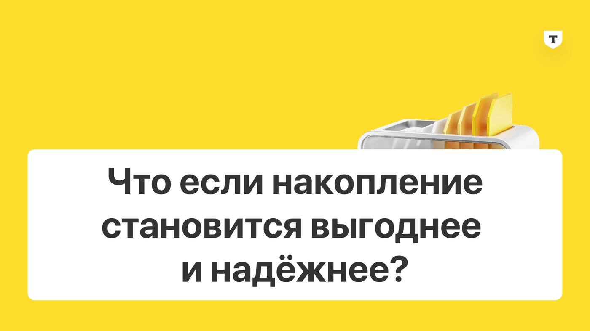
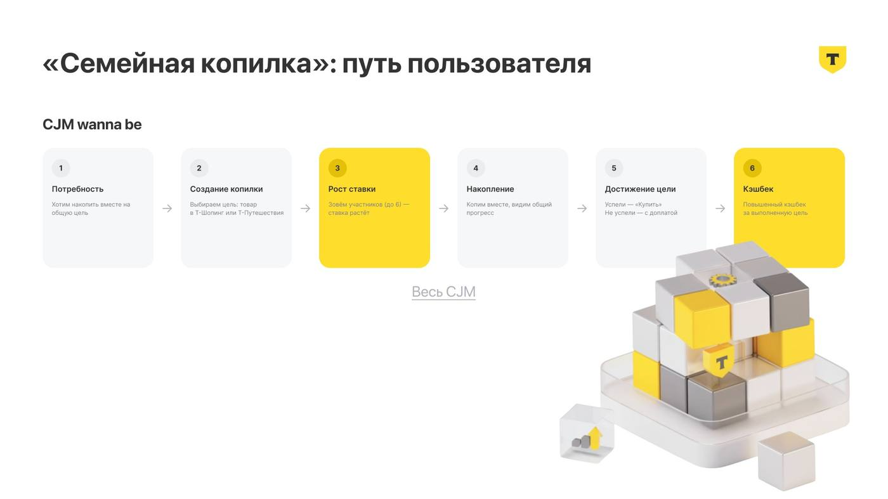
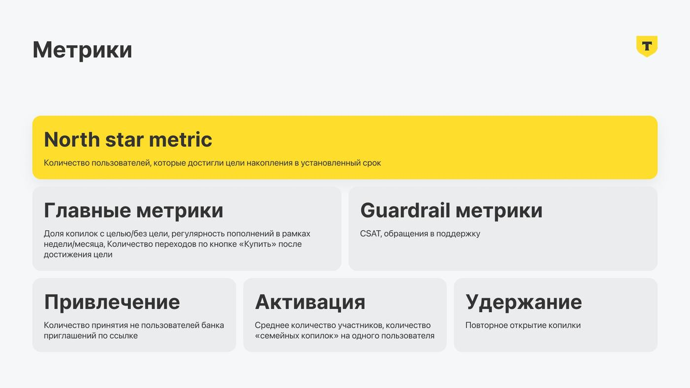

Семейная копилка — Т-Банк
Накопительный счёт, ставка по которому растёт вместе с командой, а цель — не абстрактная сумма, а конкретная вещь.
Задача
Предложить, обосновать и визуализировать новое направление для Т-Банка — «Семейную копилку»: показать логику её запуска, критерии успеха и план тестирования ключевого сценария.
Анализ рынка
Перед тем как придумывать новое, изучила конкурентов: ВТБ в апреле 2026 запустил похожую «Семейную копилку» со ставкой 4–9% за группу до 5 человек; Сбер развивает совместные финансы иначе — через бонус, зависящий от суммы на счетах двух человек; у самого Т-Банка уже есть «Совместный счёт» на 10 участников, но ставка там зависит от статуса клиента, а не от совместных действий. Вывод: спрос на «социальную» механику накопления уже подтверждён рынком — отличаться нужно не масштабом группы, а тем, к чему привязан итог накопления.

Целевая аудитория
- Семьи (с детьми и без), 25–45 лет — копят на крупную совместную покупку: взнос на жильё, ремонт, подарок ребёнку. Группа до 6 человек формируется естественно, барьер — недоверие к «размытой» ответственности за счёт.
- Друзья и пары вне брака, 20–40 лет — копят на отдых, общий подарок, мероприятие. Группа собирается легче, но ниже финансовая дисциплина и выше риск, что кто-то «отвалится».
Ключевая идея и гипотеза
Классический вопрос индустрии — как сделать совместное накопление удобным для двоих. Я перевернула его: что если накопление становится не сложнее, а выгоднее и надёжнее, чем больше людей в него вовлечено? Ограничение — сложно координировать много людей — превращается в фичу: чем больше участников, тем выше ставка. Гипотеза: растущая от размера группы (1–6 человек) ставка и цель, привязанная к конкретному товару или поездке из Т-Shopping/Т-Путешествий, повысят долю завершённых целей и конверсию в покупку — потому что финансовая выгода и наглядность цели снижают главную причину провала групповых копилок: размытую ответственность и потерю мотивации со временем.

Путь пользователя
Создаёт копилку и выбирает цель — товар в Т-Shopping, тур в Т-Путешествиях или сумму без привязки. Дальше можно копить в одиночку по базовой ставке или позвать участников (до 5, всего до 6) — ставка растёт с каждым новым человеком. Вся группа пополняет счёт и видит общий прогресс. Если цель достигнута в срок, кнопка «Купить» становится главной и начисляется повышенный кэшбек; если нет — доступна кнопка «Купить с доплатой» с обычным кэшбеком. Весь CJM в Figma →

Метрики
- North Star — количество пользователей, достигших цели накопления в срок
- Доля копилок с выбранной целью против копилок без цели
- Регулярность пополнений
- Переходы по кнопке «Купить» после достижения цели
- Guardrail — CSAT и обращения в поддержку

Как выглядит успех
- Группа из 4–6 человек набирается уже на первой неделе
- Минимум половина созданных копилок доходит до 100% цели
- Покупка происходит в течение нескольких дней после накопления суммы
- Часть не успевших в срок всё равно нажимает «Купить с доплатой»
- Продукт приводит новых клиентов в Т-Shopping и Т-Путешествия через приглашённых участников
Тестирование
- Качественные интервью + количественный опрос на панели пользователей Т-Банка — реакция на механику растущей ставки
- Юзабилити-тест кликабельного прототипа в Figma — флоу выбора цели и приглашения участников
- A/B-тест: классическая копилка без группы против новой механики с растущей ставкой и целью из экосистемы, плюс отдельный A/B на шаг прироста ставки
- Постепенный релиз с мониторингом метрик и донастройкой по итогам первых когорт — особое внимание скорости роста группы, «неактивным» участникам и влиянию кэшбека на решение о покупке
Решение
«Семейная копилка» — накопительный счёт внутри Т-Банка, где процентная ставка растёт с каждым новым участником группы (от 1 до 6 человек), а накопление привязано не к абстрактной сумме, а к конкретному товару из Т-Шопинг или туру из Т-Путешествий. Если цель достигнута в срок — на покупку начисляется повышенный кэшбек.
Рефлексия
Самым сложным было не придумать механику — растущая ставка от размера группы уже лежит на поверхности рынка, — а обосновать её жизнеспособность: проверить, не упирается ли продукт в юридические и технические ограничения банка, и честно найти отличие от конкурентов, когда диапазон ставок почти совпал с механикой ВТБ. В следующей итерации стоит глубже проработать сценарий «неактивных» участников группы — что происходит с копилкой и остальными людьми, если один из них перестаёт быть активным.
Инструменты
Figma